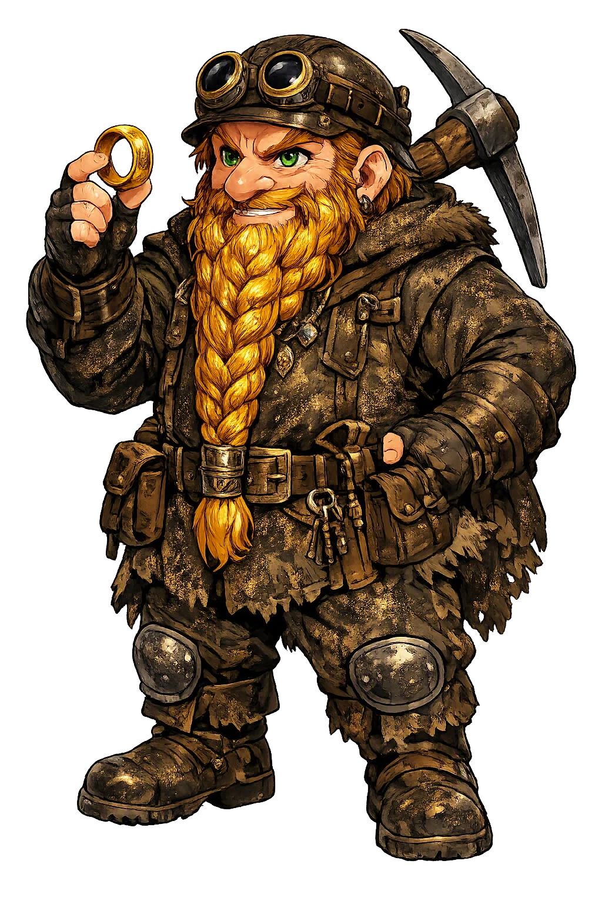
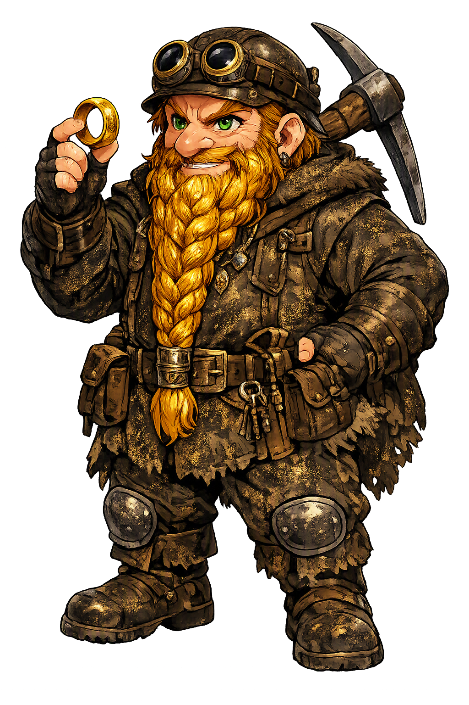

Unicode restoration and ASCII comparison
ᛅᚾᛏᚠᛅᚱᛁ
The name in its original Norse form. Andvari (ᛅᚾᛏᚠᛅᚱᛁ) is attested in the source tradition — “Careful one”. Its original diacritics and script distinctions carry the full phonetic and orthographic weight of the source tradition.
andvari
The plain andvari form is identical to the Unicode restoration. Because this name is already written in Latin letters, no diacritics, stress, or script information were lost — only capitalization differs.
Andvari
The Unicode restoration does not need to recover lost marks for Andvari. Its value is canonical spelling and consistent cataloguing, not the reconstruction of erased orthography. The domain is readable as-is to both DNS and humanity.
Andvari.com → andvari.com
The non-ASCII characters in Andvari are encoded while the ASCII remains visible. To the DNS, it is Punycode. To humanity, it is Andvari.
How Andvari travels from ancient script to the modern URL
Owned, ideal, and ASCII forms of Andvari
Andvari
Restores ᛅᚾᛏᚠᛅᚱᛁ. The full Unicode restoration. andvari.com is not in the PuniCodex collection — it is watched for release; if it drops, this temple upgrades to an owned flagship.
How Andvari was spoken
The Careful One of the Waterfall
Andvari is the dwarf who lived in the waterfall Andvarafors in a pike's shape, sweeping his gold about him with his fins — the most careful hoarder in the northern corpus, and the owner of the ring Andvaranaut. When Loki caught him in Rán's net and stripped him of everything to pay the otter's ransom, Andvari spoke the curse that made his gold a death sentence for every hand that held it after him: Hreiðmarr, Fáfnir, Sigurðr, and the whole line of the Gjúkungar.
The waterfall that was his hall — the stream where he swam in a pike's shape and kept his gold, named for him in Reginsmál's prose.
'Andvari's jewel' — the last ring of the hoard, hidden in his hand, taken by force, and answered with the curse that every owner would find death in it.
The sea-queen's net that Loki borrowed to drag the waterfall — the tool that turned a fishing into an extortion.
The fish-form in which he swept his hoard through the water — the careful one's disguise, netted all the same.
Stories of Andvari
Andvari's dossier is a single episode and its long echo: one afternoon's extortion at a waterfall, and a curse that runs through the rest of the Völsung cycle like poison through water. Reginsmál's prose, Snorri's Skáldskaparmál, and Völsunga saga all tell the catching; everything after — Fáfnir's dragon, Sigurðr's sword, the gold sunk in the Rhine — is the curse working itself out.
Óðinn, Loki, and Hœnir were traveling when they came to a waterfall, and there they saw an otter eating a salmon on the bank, its eyes shut. Loki killed it with a stone and boasted of a double catch — otter and fish at one cast. But the otter was Ótr, son of the farmer Hreiðmarr, a shape-shifter who took a pike's or otter's form to fish the falls. That night the gods sought lodging at Hreiðmarr's house and showed their catch; Hreiðmarr called his sons Fáfnir and Reginn, and the three seized the gods and bound them. The wergild was set by the skin itself: the otter's hide was to be filled with red gold, and then covered with gold from the outside until not a hair showed. Óðinn sent Loki to get the gold, and Loki went down to the world of the black-elves to find it where it lay — in the keeping of a dwarf at a waterfall.
Snorri tells the same in Skáldskaparmál as the explanation of gold's kennings: this is why poets call gold the otter's ransom, the forced payment of the Æsir. The episode exists in the tradition to gloss poetry — a myth doing the work of a dictionary.
Völsunga saga gives the fullest account of the catching. Loki went to Rán, the sea-queen who drowns sailors, and borrowed her net, then came to the waterfall called Andvarafors. There lived the dwarf Andvari, who kept a pike's shape in the water and swept his gold about him, guarding everything. Loki cast the net and caught him, and demanded the ransom: all the gold in the waterfall, or Andvari's head.
The dwarf paid over the hoard — but he kept one ring back, a small thing, hidden in his hand. Loki saw it and took that too, despite Andvari's plea that with the ring kept he could breed gold again and would not beggar himself entirely. Loki answered that one coin would be too many to leave him, and went up out of the water with the whole of it. Reginsmál's prose tells the same catching more briefly: Loki got Rán's net, cast it before the pike, and the dwarf paid the otter's ransom from his own keeping.
Stripped of everything, Andvari did the only thing left to a dwarf with nothing: he spoke. Reginsmál's prose preserves the curse as the tradition's own words: the gold that Gustr had owned — Gustr, 'Gust', the other name the prose gives the dwarf — would be the death of two brothers, and would bring strife to eight of the kin-line — eight ættlingar — and no man would ever have joy of his wealth. Völsunga saga gives the same sentence over the ring itself: it would be the death of every man who owned it.
The ring got a name from its first owner's loss: Andvaranaut, 'Andvari's jewel'. Nothing in the corpus says the curse was magic in the modern sense; it needs none. What the careful one laid on the gold was a prophecy any listener could verify, because the gold itself was now worth killing for — and the story spends the rest of its length proving him right, owner by owner.
The gods filled the otter-skin and covered it, and the last hair was covered with Andvaranaut itself — Loki had kept the ring back from Hreiðmarr until that final hair, so that even the last coin of the hoard went into the ransom. The gods went free. But Hreiðmarr refused his sons any share of the gold, and the curse began its work at once: Fáfnir killed his father sleeping, took all the treasure, and refused Reginn a share in turn. He carried the hoard out to the heath called Gnitaheiðr, and there he brooded on it until he became the worst of serpents — a dragon lying on his gold, wearing the helmet of terror.
Reginn, cheated, went to the court of King Hjálprekr and became foster-father to Sigurðr of the Völsung line. He reforged the sword Gram from the shards of Sigmund's blade and egged the young man to the heath. Sigurðr dug a pit in the dragon's path, stabbed up into the belly as Fáfnir crawled over him to drink, and then — warned by the nuthatches that Reginn meant him harm — cut off his foster-father's head. He ate of the dragon's heart and understood the speech of birds; he loaded the hoard, Andvaranaut and all, on Grani's back. The careful one's gold had a new owner, and the third owner of the ring was the greatest hero of the North. The curse did not care.
From Sigurðr the treasure passed as blood-price and dowry into the house of the Gjúkungar — Gunnar, Högni, and their sister Guðrún, whom Sigurðr married. When Sigurðr was murdered in his bed over Brynhildr's vengeance, the hoard was the Gjúkungs' alone, and it drew King Atli, Brynhildr's brother, who invited his brothers-in-law to his hall to take it from them. Gunnar and Högni rode knowing the invitation was death, and before they crossed the Rhine they did the last careful thing anyone does with Andvari's gold: they sank the whole hoard in the river, in deep water, where no one would have joy of it — the dwarf's sentence carried out by its victims themselves.
Atli's men cut Högni's heart out and cast Gunnar living into a pit of serpents, where he played the harp with his toes until an adder struck him to the heart; the hoard he died to keep lay at the bottom of the Rhine, ownerless. Atlakviða ends the account with the river itself as the treasure's last keeper: the Rhine shall hold the strife-metal of the Niflungar. Two brothers dead, eight princes at strife, no man the happier — Reginsmál's prophecy closed like a hand. Andvari was avenged on everyone, which is to say on no one in particular, which is exactly what a curse is.
His name is care itself — andvari, watchfulness, the quality of mind that checks the locks twice. And the myth is merciless to it: the most careful keeper in the corpus is caught in an afternoon, by a borrowed net, in his own water, and stripped to the last hidden ring. Care could not save him, because care guards against theft and what came for him was law — a wergild, a debt, a skin that had to be covered hair by hair. What he had left was speech, and he used it like a dwarf: precisely, vindictively, and with perfect aim. The curse is the one thing he made that nobody could take, because it was already given. Everything after is arithmetic — two brothers, eight princes, no joy — and the myth lets the numbers run for four generations to teach a single lesson the North never tired of: gold that is taken by force does not change owners; it changes victims. Andvari in his waterfall is the small still beginning of the Völsung tragedy, the moment the hook was set. The careful one's revenge on the careless world was simply to tell it the truth about what it had just picked up.
Enter Extended Lore